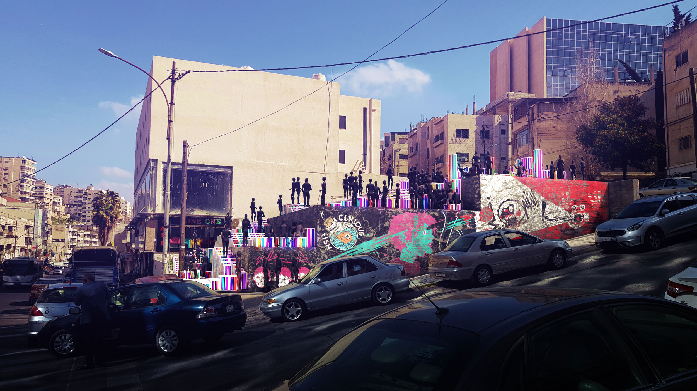

Shape-Shifting Architecture | Alternative UOS
Shape-Shifting Architecture | Underground Event Space
Alternative Modes of Urban Open Space Operation
Physical Prototype's | Segments
Physical Prototype's | Machine
Plot #1: Platform System UOS
Plot #2: Adaptive Reuse UOS
Plot #3: Green & Gray UOS
Shape-Shifitng Architecture
A project on user-responsive kinetic design of urban open spaces
& thier impact in redefining the Ammani Urban Pockets
Year | 2021 MSc. in MediaArchitecture | Master Thesis Project
Type | Responsive Urbanity

Shape-Shifting Architecture is a project on rethinking the design and utilization of urban open spaces primarily in a decentralized metropolitan setting, done by taking a deconstructionist approach through evaluating the efficacy of these spaces in regards to their temporal socio-economic narrative that is driven by a globalized discourse, while simultaneously recognizing the main elements of their spatial distinction. That then proposes an alternative form of urban open space creation, incorporating tactile, modular segment designs and user-responsive technological instruments into the creation of a constantly temporal and changing space, encompassing socio-economic elements of its urban host, while being automatically driven and generated by and for its user(s). Hypothesised for the implementation in the context of reclaiming lost urban spaces – Urban Pockets, situated in decayed, historic parts of the Ammani metropolis (Arar St.), Jordan. Through rethinking the functionality and structural composition of the city’s urban modules, from fixed urban elements to highly responsive tactile modules, active and reactive to a cluster of momentary actions, different behavioural needs, and stimuli. Thereby constantly changing the architectural discourse of these kinetic pockets to an adaptable shape-shifting architectural one. Transforming them into micro urban hubs dispersed throughout the static parts of their decayed historic context. Indirectly handing over the control of urban open space design for the user(s) of that space, incorporated within the revitalization process of urban pocket, through a decentralized approach of intermediate small hubs allocated around and away from the centralized metropolitan area.
While, the main concept of the project is on deconstructing what an urban open space is? Here the design approach illustrates a direct representation, by dividing the spatial boundaries of a hypothetical urban plane into a grid system effectively creating modular segments, represented as extrusions of linear modules contained within the space, operated automatically by either acting and reacting based on various users’ needs at a specific time. Which in turn generates physical elements, spatial typologies and in effect projects a temporary spatial affiliation and identity to its user based on its momentary functions.


The system of operation is derived from relevant technology case studies of linear actuating systems and of physically, materializing digital processes i.e.; HyperMatrix by Jonpasang, inForm project by MIT Tangible group, etc. Through utilizing a rectangular and modular segmental system that is designed with the intend of being devoid of identity or meaning, so as not to influence users’ behavioural patterns and or create a superficial identification and or relation with its user. Rather having this identity constantly reshaped by the users through momentary utilization based on spatial needs. Placed in a matrix layout resembling a digital screen surfaces, where these segments act as pixels that respond in moving vertically to a multitude of precise hights, thereby generating UOS elements and forms based on different input systems.
Creating a physical machine consisting of a matrix layout, incorporating specifically designed segmental modules, in order to act as the floor surface of a said UOS that is of a significantly smaller scale than its realization one. Thereby displaying a multitude of different UOS spatial elements of: urban furniture, generative staircases, etc. while simultaneously reacting to different spatial stimuli.
The design and layout of the segments grid and size in term of specs and spatial capabilities, were redesigned for real-world applications. Thereby presenting the schematic drawings of the redesigned and rescaled mechanism, implemented on a hypothetical spatial plane. Exhibiting a grid of 40x40 segments, as an average distribution, adopted for illustrating the spatial occupancy of the design, that due to its modular system could be either expanded upon or decreased based on its allowed spatial tolerance parameters.
The commercial narrative existing within an assigned spatial context of the designed alternative UOS, directly relates to the notion of establishing an alternative commercial discourse in it, done in the form of both; digitized commercial stores, presenting targeted digitized advertising as a spatial stimulus and momentary pop-up commercial practices in relation to spatial events. Based on readapting the pre-established SLB models in and around the area of the project into a much more relevant commercial language.
Utilizing effective spatial marketing strategies practiced by international businesses through indirectly establishing localized affiliation of a specific SLB. Done by means of contribution, in extending the reach and exposure of these local economies into a much wider and versatile audience and in effect revitalizing a decaying urban context through audience attraction, driven by the exclusivity of the commercial and spatial narrative and its ripple effect in generating communication buzz of the space and its affiliated SLB.

Starting with the readaptation process by creating a digital presence of the surrounding commercial businesses, displayed in the form of a smartphone app, through cataloguing their affiliated products and services, then moving to creating a digital store layout that has familiar design elements to a physical store, making it more intuitive to a multitude of different users. The designed alternative commercial discourse is the digitized advertising, that operates in a similar matter to user-targeted advertising systems, though their display varies during different times, which corelates to different locations within the space.

The main urban open spaces in the city of Amman are concentrated around the historic downtown area, consisting of Jabal Amman (Rainbow Street) and Jabal Al Weibdeh (Paris Roundabout). Having the form of either a vibrant urban street hub, passing by a densely located commercial and transitory spots or a roundabout, slightly dispersed into a similar narrative, with the downtown area as the point of connection between both, that is further reinforced by its topography. However, these spaces occupy a similar discourse, that is of centrality and the excessive concentration of transitory urban activity, located in a single spot, while this method of urban design provides a constant flux of visitors and stimulates the socio-economic factors of its current point of interest, yet in effect it neglects the distribution of this spatial stimuli into other sections within its larger context and thereby, effectively establishes a sudden decay and a complete shift from the previously observed urban life. Especially, when frequenting areas with similar spatial morphology and are located with a relatively close proximity from one another, but are directly passed their centre of activity, as is the case in Arar Street.
Utilized as the intermediate pathway by visitors to these spaces, due to its accessible location between all 3, yet in most cases, it is never the destination. Despite maintaining a cycle of events during the day, as is the case in most of the previously discussed UOS, which are primarily based on executing everyday tasks. However, its cycle of events during the night is of a transition hub to other nodes. That is reflected on its street elements of occasionally abandoned stores, lack of pedestrian mobility and the distribution of urban pockets, packed between seemingly decayed narratives. Thus, the site selection is based on a decentralizing process, that doesn’t directly establish an UOS hub, however it creates dispersed points of interest along the street located with an intermediate walking distance, so as its neither too far or too close from one another. Through reclaiming 3 distinct urban pockets situated within alternating points along the street and are of varying degrees of spatial operation.